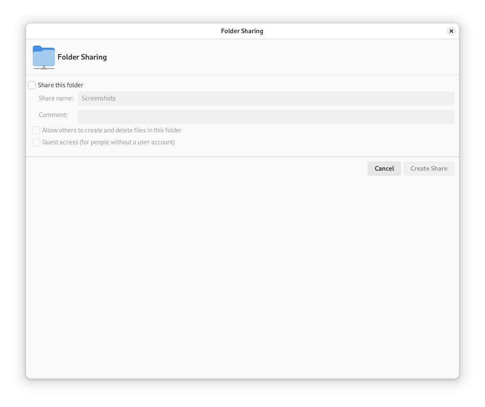

5.4. Sharing directories
Sharing and exchanging documents is a must-have in corporate environments. GNOME Files offers you file sharing, which makes your files and directories available to both Linux and Windows users.
5.4.1. Enabling sharing on the computer
Before you can share a directory, you must enable sharing on your computer. You can enable this either with YaST or by adding an entry to the Samba configuration file.
5.4.1.1. Enabling sharing with YaST
-
Start YaST from the Activities overview and enter the
rootpassword. -
In the category Network Services, click Windows Domain Membership.
-
Select Allow Users to Share Their Directories, then click OK.
Sharing directories is now enabled on your computer.
5.4.1.2. Enabling sharing by editing the Samba configuration file
-
Start the Terminal.
-
Open the configuration file
/etc/samba/smb.confasroot.Use the following command:
sudo vi /etc/samba/smb.conf -
To enable editing, press the I key.
-
In the section
[global], add the following entry:usershare max shares = 100 -
Save and exit the editor.
Sharing directories is now enabled on your computer.
5.4.2. Enabling sharing on the computer via the configuration file
Before you can share a directory, you must enable sharing on your computer. To enable sharing:
-
Start YaST from the main menu.
-
Enter the
rootpassword. -
In the category Network Services, click Windows Domain Membership.
-
Select Allow Users to Share Their Directories, then click OK.
5.4.3. Enabling sharing for a directory
To configure file sharing for a directory:
-
Open GNOME Files.
-
Right-click a directory and select Sharing Options.

Figure 5.2. Sharing a folder in GNOME Files -
Select Share this folder.
-
If you want other people to be able to write to the directory, select Allow others to create and delete files in this folder. To allow access for people without a user account, check Guest access.
-
Click Create Share.
-
If the directory does not already have the permissions that are required for sharing, a dialog appears. Click Add the permissions automatically.
The directory icon changes to indicate that the directory is now shared.
Samba domain browsing only works if your system's firewall is configured accordingly. Either disable the firewall entirely or assign the browsing interface to the internal firewall zone. Ask your system administrator how to proceed.